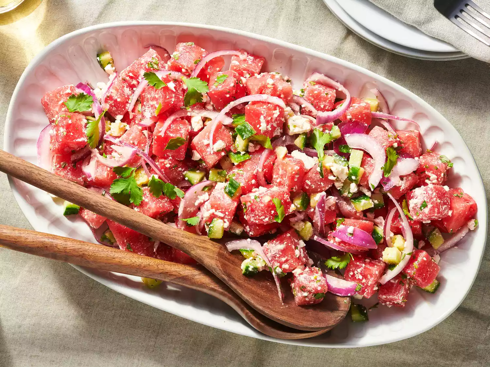

Watermelon Salad

This watermelon salad is a surprising yet delicious combination of juicy watermelon, red onion, cucumber, and feta cheese. The perfect appetizer or light meal on a hot summer day.
Ingredients
- Onion: Red onion adds bright color and bold flavor.
- Lime juice: Lime juice brightens up the flavor.
- Cucumber: English cucumbers lend refreshing flavor.
- Watermelon: Of course, you’ll need watermelon.
- Feta: Crumbled feta cheese gives the watermelon salad a creamy flavor.
- Herbs and seasonings: Finish the salad with fresh cilantro, sea salt, and cracked black pepper.
Steps
- Gather the ingredients.
- Place red onion slices in a small bowl; pour over lime juice. Allow onions to marinate while assembling the salad.
- Gently combine watermelon, cucumber, feta cheese, and cilantro in a large bowl; season with black pepper.
- Toss watermelon salad with marinated onions and season with sea salt just before serving.
- Serve and enjoy!